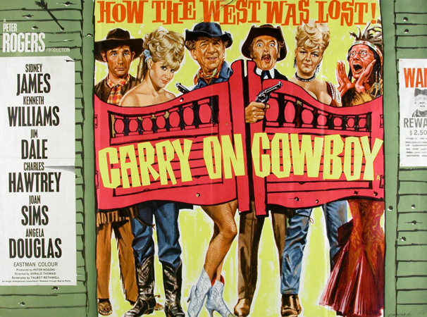
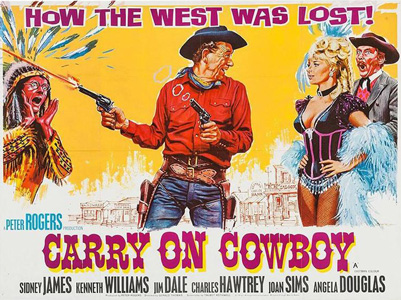

Peter Rogers
Talbot Rothwell
Eric Rogers (uncredited)
Outlaw Johnny Finger, better known as The Rumpo Kid (Sid James), rides into the frontier town of Stodge City, and immediately guns down three complete strangers, orders alcohol at the saloon—horrifying Judge Burke (Kenneth Williams), the teetotal Mayor of Stodge City—and kills the town's sheriff, Albert Earp (Jon Pertwee). Rumpo then takes over the saloon, courting its former owner, the sharp-shooting Belle (Joan Sims), and turns the town into a base for thieves and cattle-rustlers.
In Washington DC, Englishman Marshal P. Knutt (Jim Dale), a "sanitation engineer first class", arrives in America in the hope of revolutionising the American sewerage system. He accidentally walks into the office of the Commissioner, thinking it to be the Public Works Department, and is mistaken for a US Peace Marshal, and is promptly sent out to Stodge City.
The Rumpo Kid hears of the new Marshal, and tries all he can to kill the Marshal without being caught, including sending out a pack of Indians, led by their Chief Big Heap (Charles Hawtrey) and hanging the Marshal after framing him for cattle rustling. Knutt is saved by the prowess of Annie Oakley (Angela Douglas), who has arrived in Stodge to avenge Earp's death and has taken a liking to Knutt.
Eventually, Knutt runs Rumpo out of town, but once Rumpo discovers that Knutt really is a sanitary engineer and not the Peace Marshal he once thought, he swears revenge, returning to Stodge City for a showdown at high noon. By hiding in the sewers beneath the main street, Knutt kills off Rumpo's gang, but fails to capture Rumpo, who escapes with the aid of Belle.
Filming dates: 12 July - 3 September 1965.
Interiors: Pinewood Studios, Buckinghamshire.
Exteriors: Chobham Common, Surrey and Black Park, Fulmer, Buckinghamshire.
This was the first film to feature series regulars Peter Butterworth and Bernard Bresslaw. Series regulars Sid James, Kenneth Williams, Jim Dale, Charles Hawtrey and Joan Sims all feature, and Angela Douglas makes the first of her four appearances in the series.
Eric Rogers, who wrote the music for the film, has a cameo as a pianist in the saloon.
"I tried to make peace with the Sioux once – couldn’t trust ‘em. One minute it was peace on, the next, peace off."
Monthly Film Bulletin - " The introductory scenes make a neat enough send-up of traditional Western routines, situations and dialogue, with a cast largely made up of Carry On regulars."
